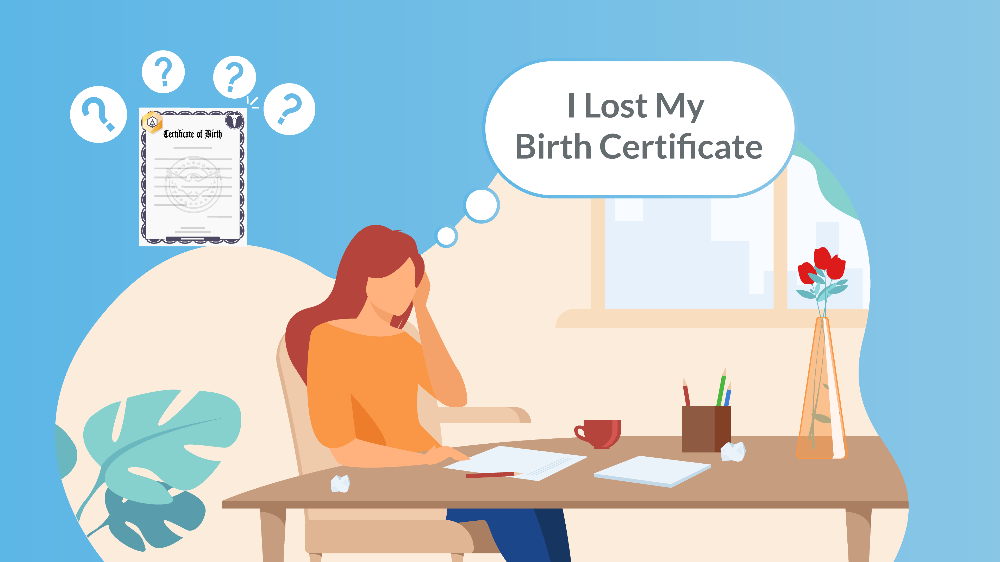
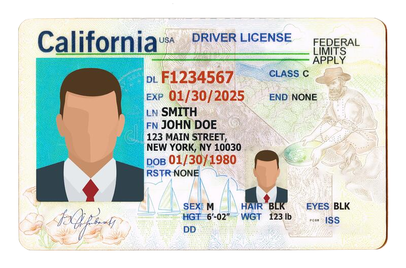

Birth Certificates can be obtained in person in the county you were born in, or remotely by mail / on the Internet. In order to retrieve your birth certificate, you must show a photo ID. Because of this, it cam be easier to have a close family member get your birth certificate, as they ecause family member can use their own ID to get it on your behalf. Examples of close family members include: *Parents *Legal Guardians *Children *Grandparents *Grandchildren *Siblings *Spouses *Domestic Partners
If you have any of these family members, we STRONGLY recommend asking them to help you obtain your birth certificate.
You can either retrieve your birth certificate in person or by filling out a form.
If you decide to get your birth certificate in person, you will need a notory to verify your identity with the ID you have on hand, such as CDCR (prison or parole ID) ID, public benefits cards, or witnesses confirming your identity. If you do not have local contacts to confirm your identity, you can ask your parole or probation officer (and their supervisor or other colleague, if you need a second person) to confirm your identity.
Below, you can find the resources necessary to fill out the form to obtain your birth certificate. Each county in California has its own form to use in person, whereas the state of California only has one form. This form is shown below.
It costs $25 for a mail-in California form, while each county's form has its own cost. If you are homeless, you can fill out the following form for a fee waiver. Please note that this form must be signed by a homeless service provider. This includes transitional housing providers. Catholic Charities, parole, and probation may also be able to provide signed fee waivers.
If you are requesting a replacement social security card (because they have a number), then you can request it by mail (or online, if you have a state issued ID/DL and are not changing your name). New social security cards must be obtained in person at your local Social Security Office. You must have the following items if when you go to the office: *Proof of citizenship (birth certificate or passport) *Proof of age (religious record made before the age of 5 showing your date of birth, US hospital record of your birth, or passport) *Proof of identity (MediCal card, U.S. military ID, certificate of naturalization, health insurance card, certified copy of medical record, or student ID/record)
If you are having trouble locating a Social Security Office, use this interactive map to find one near you!

There are two routes you can take when obtaining your driver's license or ID card: 1) going online, or 2) going in person. Below, you can find the details on whether you qualify for renewal online or if you need to go in person.
Note: You may NOT renew online if: 1) you are not the person named on the renewal notice, 2) you want to change your name, address, or gender identity, or 3) you want to change from a standard DL/ID to a REAL ID, Reduced Fee DL/ID, No Fee DL/ID, Senior ID, or Commercial DL
| Category | Situation | Customer Action |
|---|---|---|
| Drivers 70+ (non-commercial) | Beginning December 6, 2020, eligible to renew online or by mail for expirations March 2020 through the COVID-19 pandemic. | Complete online renewal or renew by mail |
Drivers 69 and under | Expanded eligibility to renew online or by mail for licenses expiring during the emergency. | Submit online renewal application or renew by mail |
| First Time REAL ID | Requires office visit. | Complete online application Upload documents No appointment necessary Bring documents to office visit |
| REAL ID Renewal | Can be completed online. | No office visit required |
| Limited-term REAL ID renewal | N/A | Requires an office visit |
| Driver's License Permits | All permits expiring March 1, 2020 through May 31, 2021 are extended for six months or to a date 24 months from the date of application, whichever is earlier. | No action necessary |
| Commercial License | All commercial driver's licenses, endorsements and commercial learner's permits expiring between March 2020-February 2021 have an extension valid through February 28, 2021. | No action necessary |
If you are eligible to obtain your card online, use the following resources:
Start REAL ID Driver's License RenewalIf you are renewing your ID in person, you will need to make sure you have the required documents. Below, you can find a list of the documents you need: *Proof of identity (birth certificate or passport) *2 California residency documents *Proof of your SSN *If your name is changing, you must also have a proof of name change document
If you are having trouble locating a DMV, use this interactive map to find one near you!